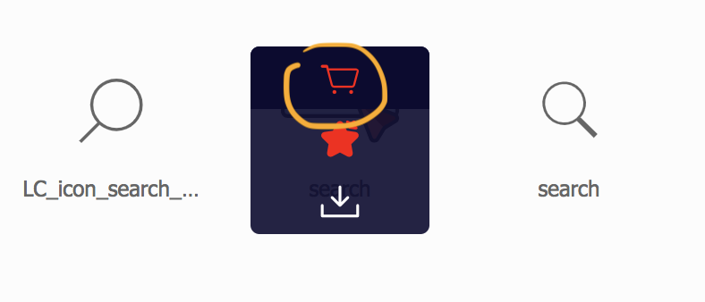
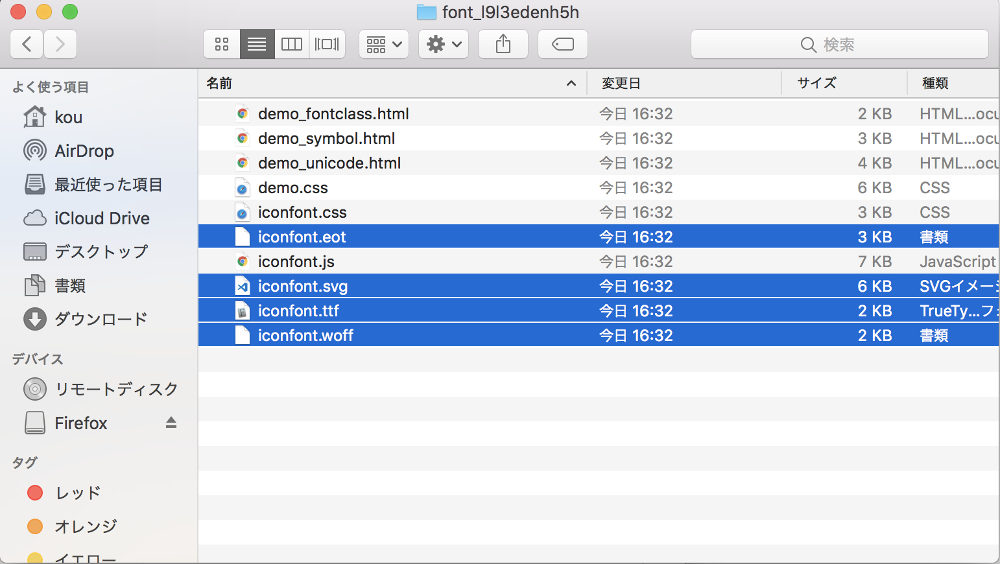

关于 IconFont
Icon Font简而言之也就是把字体做成图标
Icon Font的原理
例：
1 | <p>Hello 饥 人谷</p> |
这里把「饥人谷」这几个字改为 unicode 编码，此时页面上仍然能以serif 字体展示「饥人谷」三个字。
使用浏览器打开页面时，浏览器会读取 HTML 文件进行解析渲染。当读到「饥人谷」三个字时会转换成对应的 unicode码（可以认为是世界上任意一种文字的特定编号）。再根据HTML 里设置的 font-family （如果没设置则使用浏览器默认设置）去查找电脑里（如果有自定义字体@font-face ，则加载对应字体文件）对应字体的字体文件。找到文件后根据 unicode 码去查找绘制外形，找到后绘制到页面上。 所以对于第二个范例， 「⛭」是「饥」的 unicede 码，所以用户最终也能看到serf字体样式的「饥」字。
Icon Font生成和使用步骤
1.制作字体文件
这个需要设计师把字体文件做好。一般不属于前端工作范畴，在这里掠过不讲。
2.声明font-family
- 使用本地链接
- 使用第三方链接
3.使用font-family
- 使用HTML实体
- 使用CSS：before
最常用的Icon Font生成步骤
1. 点击打开阿里巴巴的免费字体工具网站
2. 在搜索栏里搜索自己需要的图标（英文）
3. 用Github登陆后选择自己中意的图标，添加入库
4. 可以选择添加至项目或者直接下载至本地
下图的search下的为HTML实体，可以用实体显示但是不便记忆所以不推荐
也可以使用CSS before 的content加上/ 导出icon
1 | .icon-search:before { content: "\e71d"; } |
5. 下载至本地后解压
为了浏览器兼容，建议复制后缀名为.eot,svg,ttf和woff的4个文件到自己的目录下
